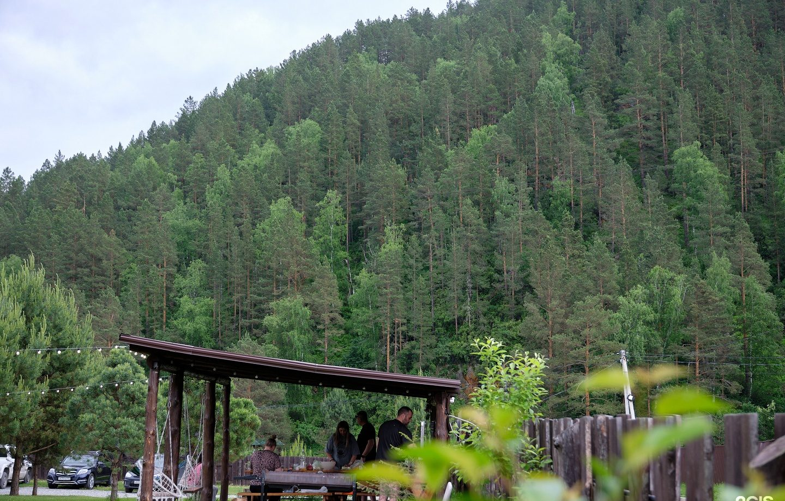
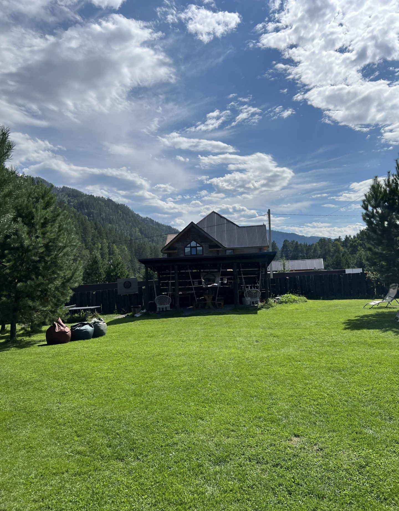

пос. Усть-Сема, Чемальский район, Республика Алтай, 649245
Заезд с 14:00, выезд до 11:00
Условия уточните у хозяев. Парковка на территории.
«Удобное месторасположение, находится на развязке».Елена Борзова-Ребик, отзыв в 2ГИС
«Очень хорошее расположение, в 20–30 минутах езды на машине есть сетевые магазины».Александр Шестаков, отзыв в 2ГИС
«Местоположение удачное для поездок во все интересные локации Горного Алтая».Отзыв в 2ГИС

Ответят, есть ли места на ваши даты, и подскажут дорогу.